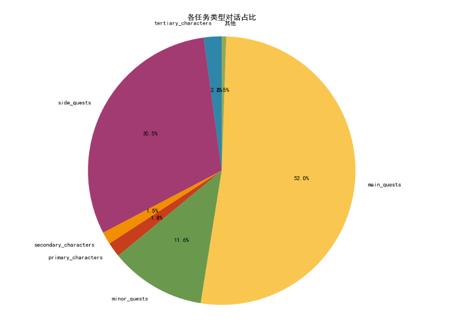
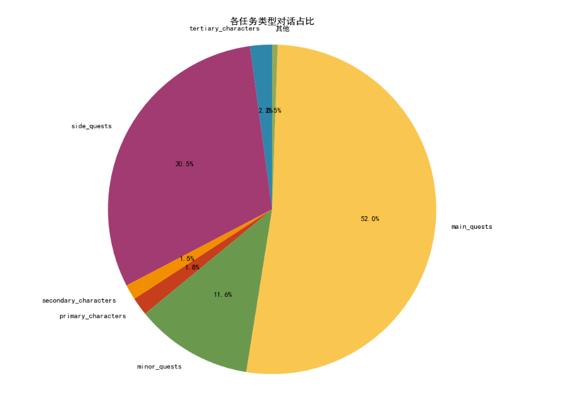
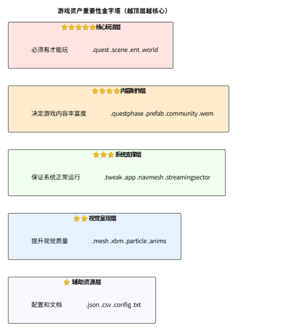
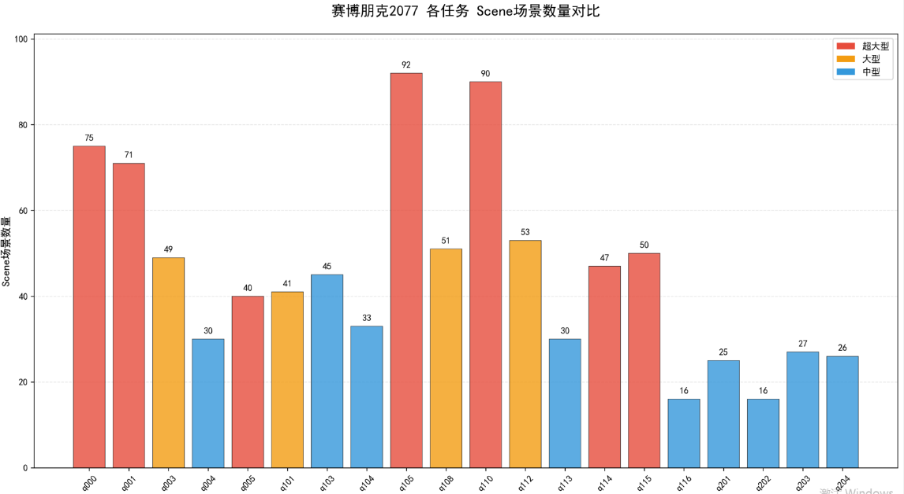
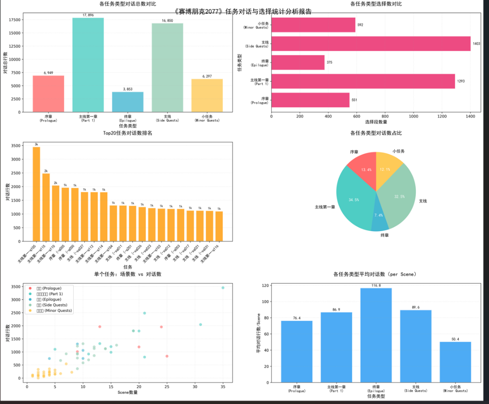
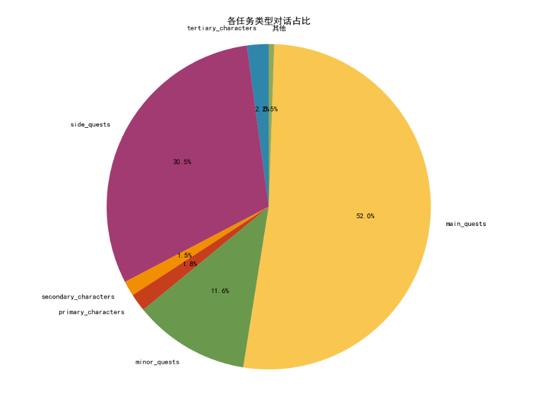

📚 完整数据资产分类清单
🎬 一、任务与剧情系统 (核心玩法)
| 资产类型 | 数量 | 用途说明 |
|---|---|---|
| .quest | 2,435 | 任务主文件，定义任务流程图、目标、触发条件 |
| .questphase | 5,714 | 任务阶段定义，细化任务的各个步骤 |
| .gamedef | 2,769 | 游戏定义文件，关联任务、世界、角色生成点 |
| .scene | 13,630 | 过场动画场景，包含对话、镜头运动、角色表演 |
| .scenesolution | 6,768 | 场景解决方案，管理多版本场景数据 |
| .scnlocjson | 4,000 | 场景本地化数据，包含字幕翻译 |
| .scenerid | 1,456 | 场景资源ID映射表 |
| .journal | 1,417 | 日志条目，任务提示、数据库信息 |
| .conversations | 50 | 对话系统配置 |
🎤 二、音频与对话系统 (声音表现)
| 资产类型 | 数量 | 用途说明 |
|---|---|---|
| .wem | 281,359 | Wwise编码音频文件（游戏中所有声音） |
| .cdprsubtitle | 58,006 | CDPR字幕文件，包含时间轴和文本 |
| .opuspak | 1,442 | Opus压缩音频包 |
| .voicesetsolution | 571 | 语音集解决方案，管理角色配音版本 |
| .facialsetup | 701 | 面部表情设置，配合语音的口型同步 |
| .bnk | 263 | Wwise音频库文件 |
| .wav | 286 | 原始WAV音频文件（源素材） |
| .acousticdata | 49 | 声学数据，场景音效混响参数 |
| .lipmap | 2 | 口型映射文件，语音与口型对应 |
🌍 三、世界与关卡构建 (环境制作)
| 资产类型 | 数量 | 用途说明 |
|---|---|---|
| .world | 1,065 | 世界主文件，整个游戏区域定义 |
| .streamingsector | 34,769 | 流送扇区，世界分块单元（动态加载） |
| .prefab | 163,207 | 预制件，可复用的场景对象组合 |
| .blockout | 1,051 | 关卡白盒阻挡设计 |
| .sector_artifact | 1,485 | 扇区编译产物 |
| .mlmask | 34,702 | 多层地形遮罩 |
| .mlsetup | 25,136 | 多层地形设置 |
| .mltemplate | 720 | 多层地形模板 |
| .terraintile | 16,168 | 地形瓦片数据 |
| .cminimap | 20,736 | 小地图数据 |
| .areas | 12 | 区域定义 |
| .mappins | 30 | 地图标记点 |
| .poimappins | 12 | POI兴趣点标记 |
👥 四、角色与实体系统 (互动对象)
| 资产类型 | 数量 | 用途说明 |
|---|---|---|
| .ent | 22,099 | 实体定义文件，所有游戏对象的核心 |
| .app | 2,610 | 外观定义，角色服装/装备配置 |
| .rig | 2,261 | 骨骼绑定文件，角色骨架 |
| .community | 7,368 | NPC群组/社区定义，控制NPC生成 |
| .workspot | 5,649 | 工作点，NPC交互位置（坐/站/工作） |
| .morphtarget | 231 | 形变目标，面部表情变形 |
| .charcustpreset | 10 | 角色自定义预设 |
| .facialcustom | 6 | 面部自定义数据 |
| .inkcharcustomization | 5 | UI角色自定义界面 |
🤖 五、AI与行为系统 (智能控制)
| 资产类型 | 数量 | 用途说明 |
|---|---|---|
| .navmesh | 8,695 | 导航网格，AI寻路数据 |
| .behavior | 382 | 行为树定义，AI逻辑 |
| .animgraph | 820 | 动画图，动画状态机 |
| .actionanimdb | 12 | 动作动画数据库 |
| .genericanimdb | 4 | 通用动画数据库 |
| .aiarch | 27 | AI原型定义 |
| .smartobjects | 1,131 | 智能对象，可交互物品 |
| .smartobject | 88 | 单个智能对象定义 |
| .interaction | 147 | 交互定义 |
| .spawnset | 346 | 生成集合，NPC/敌人生成配置 |
🎨 六、3D美术资源 (视觉模型)
| 资产类型 | 数量 | 用途说明 |
|---|---|---|
| .mesh | 143,713 | 3D模型文件，所有3D物体 |
| .w2mesh | 978 | Witcher 2格式网格（遗留） |
| .xbm | 165,704 | 贴图文件，纹理图像 |
| .mi | 11,659 | 材质实例，材质配置 |
| .w2mi | 703 | Witcher 2材质实例 |
| .mt | 582 | 材质模板 |
| .matlib | 4 | 材质库 |
| .mergedmesh | 56 | 合并网格，优化模型 |
| .cubemap | 24 | 立方体贴图，环境反射 |
| .texarray | 15 | 纹理数组 |
✨ 七、特效系统 (视觉效果)
| 资产类型 | 数量 | 用途说明 |
|---|---|---|
| .particle | 6,846 | 粒子效果，烟雾/火焰/爆炸等 |
| .effect | 5,366 | 特效定义 |
| .fx | 653 | FX特效文件 |
| .fxmeta | 339 | 特效元数据 |
| .fxmetainclude | 1 | 特效元数据包含文件 |
| .envprobe | 15,458 | 环境探头，光照探针 |
| .env | 451 | 环境设置 |
| .envparam | 445 | 环境参数 |
| .gidata | 1,027 | 全局光照数据 |
🎞️ 八、动画系统 (运动表现)
| 资产类型 | 数量 | 用途说明 |
|---|---|---|
| .anims | 20,450 | 动画文件，角色动作 |
| .inkanim | 714 | UI动画 |
| .animgraph | 820 | 动画图，动画混合逻辑 |
| .scnmocap | 10 | 场景动作捕捉数据 |
| .facialsetup | 701 | 面部动画设置 |
🖼️ 九、UI系统 (用户界面)
| 资产类型 | 数量 | 用途说明 |
|---|---|---|
| .inkwidget | 2,118 | UI控件定义 |
| .inkatlas | 1,410 | UI图集，界面贴图集合 |
| .inkstyle | 264 | UI样式 |
| .inkmenu | 7 | UI菜单定义 |
| .inkhud | 18 | HUD界面定义 |
| .inklayers | 3 | UI层级定义 |
| .inkgamesettings | 3 | UI游戏设置 |
| .inktypography | 3 | UI字体排版 |
| .inkfontfamily | 34 | UI字体族 |
| .inkshapecollection | 21 | UI形状集合 |
| .inkfullscreencomposition | 2 | 全屏UI组合 |
| .editorstyle | 43 | 编辑器样式 |
⚙️ 十、配置与数据系统 (参数调整)
| 资产类型 | 数量 | 用途说明 |
|---|---|---|
| .json | 39,267 | JSON配置文件，通用数据格式 |
| .tweak | 2,196 | TweakDB配置，游戏数值调整 |
| .csv | 317 | CSV表格数据 |
| .xml | 1,204 | XML配置文件 |
| .ini | 1,107 | INI配置文件 |
| .config | 359 | 配置文件 |
| .settings | 40 | 设置文件 |
| .datasource | 31 | 数据源定义 |
📜 十一、脚本系统 (逻辑编程)
| 资产类型 | 数量 | 用途说明 |
|---|---|---|
| .script | 1,734 | 游戏脚本，RED脚本语言 |
| .ws | 93 | WitcherScript脚本（遗留） |
| .lua | 861 | Lua脚本 |
| .py | 233 | Python脚本（工具） |
🔧 十二、引擎代码 (程序开发)
| 资产类型 | 数量 | 用途说明 |
|---|---|---|
| .cpp | 13,585 | C++源文件 |
| .h | 20,769 | C/C++头文件 |
| .hpp | 919 | C++头文件 |
| .c | 878 | C源文件 |
| .cs | 3,109 | C#源文件 |
| .cc | 433 | C++源文件 |
| .cxx | 20 | C++源文件 |
🎮 十三、物理系统 (物理模拟)
| 资产类型 | 数量 | 用途说明 |
|---|---|---|
| .phys | 109 | 物理配置 |
| .physmat | 79 | 物理材质 |
| .physicalscene | 77 | 物理场景 |
| .repx | 5 | PhysX物理场景 |
🚗 十四、载具系统 (交通工具)
| 资产类型 | 数量 | 用途说明 |
|---|---|---|
| .vehcurveset | 7 | 载具曲线集 |
| .audiovehcurveset | 63 | 音频载具曲线集 |
| .vehcommoncurveset | 3 | 载具通用曲线集 |
| .bikecurveset | 3 | 自行车曲线集 |
| .traffic_persistent | 12 | 持久化交通数据 |
| .traffic_debug | 10 | 交通调试数据 |
| .lane_connections | 11 | 车道连接 |
| .lane_polygons | 11 | 车道多边形 |
| .lane_spots | 11 | 车道点位 |
| .locopaths | 11 | 运动路径 |
🌿 十五、植被与装饰 (环境细节)
| 资产类型 | 数量 | 用途说明 |
|---|---|---|
| .cfoliage | 13,538 | 植被配置 |
| .folbrush | 294 | 植被笔刷 |
🏆 十六、游戏系统 (玩法机制)
| 资产类型 | 数量 | 用途说明 |
|---|---|---|
| .loot | 13 | 战利品配置 |
| .devices | 23 | 设备定义 |
| .credits | 3 | 制作人员名单 |
| .tooltips | 11 | 提示信息 |
| .hitrepresentation | 24 | 命中表现 |
| .dismdebris | 3 | 破坏碎片 |
| .garmentlayerparams | 4 | 服装层参数 |
🎥 十七、视频与媒体 (过场视频)
| 资产类型 | 数量 | 用途说明 |
|---|---|---|
| .bk2 | 501 | Bink视频文件 |
| .bik | 6 | Bink视频文件 |
| .mp4 | 1 | MP4视频 |
| .mov | 1 | QuickTime视频 |
🌐 十八、本地化系统 (多语言)
| 资产类型 | 数量 | 用途说明 |
|---|---|---|
| .scnlocjson | 4,000 | 场景本地化JSON |
| .cdprsubtitle | 58,006 | 字幕文件 |
| .mo | 359 | GNU gettext翻译文件 |
| .po | 多个 | 翻译源文件 |
| .voicesetsolution | 571 | 多语言配音管理 |
🖼️ 十九、图像资源 (2D素材)
| 资产类型 | 数量 | 用途说明 |
|---|---|---|
| .png | 11,138 | PNG图片 |
| .jpg | 87 | JPEG图片 |
| .dds | 84 | DirectDraw Surface纹理 |
| .tga | 32 | TGA图片 |
| .bmp | 27 | 位图 |
| .svg | 71 | 矢量图 |
| .ico | 91 | 图标文件 |
🔤 二十、字体系统 (文字渲染)
| 资产类型 | 数量 | 用途说明 |
|---|---|---|
| .ttf | 412 | TrueType字体 |
| .otf | 424 | OpenType字体 |
| .fnt | 106 | 位图字体 |
🗺️ 二十一、热力图与调试 (开发工具)
| 资产类型 | 数量 | 用途说明 |
|---|---|---|
| .heatmap | 12 | 热力图数据 |
| .heatmaplayer | 12 | 热力图层 |
| .streamingquerydata | 14 | 流送查询数据 |
| .spatial_representation | 12 | 空间表示 |
| .null_areas | 12 | 空区域定义 |
📦 二十二、其他资产 (杂项)
| 资产类型 | 数量 | 用途说明 |
|---|---|---|
| .curveset | 260 | 曲线集合 |
| .curveresset | 4 | 曲线资源集 |
| .camcurveset | 11 | 相机曲线集 |
| .gradient | 38 | 渐变定义 |
| .palette | 5 | 调色板 |
| .waveform | 13 | 波形数据 |
| .weather | 5 | 天气系统 |
| .ies | 83 | IES光照文件 |
🎮 一、核心资产 (最重要)
示例: sq004_riders_on_the_storm.quest + sq004_riders_on_the_storm.questphase + sq004_riders_on_the_storm.gamedef
特点: 包含versions目录保存不同补丁版本(gold/patch0/patch1_2)
关系: .ent 引用 .app (外观) + .rig (骨骼) + 各种组件
graph
%% 原有关系保留
A[.quest
2,435] ---|组合| B[.questphase
5,714]
A ---|关联| C[.gamedef
2,769]
C ---|关联| D[.world
少量]
E[.ent
22,099] -->|引用| F[.app
2,610]
E -->|引用| G[.rig
2,261]
E -->|关联| H[.prefab
163,207]
D -->|包含| I[.streamingsector
34,769]
D -->|引用| H
J[.scene
13,630] -->|版本管理| K[.scenesolution
6,768]
J -->|本地化| L[.scnlocjson
4,000]
%% 新增核心引用：.questphase → .scenesolution
B -->|触发场景（指定版本）| K
%% 补充逻辑：.scenesolution 关联 .scene（明确版本映射）
K -->|映射对应版本| J
🔧 二、关键资产
🎨 三、美术资产
📊 资产重要性评级
| 等级 | 资产类型 | 重要性说明 |
|---|---|---|
| ⭐⭐⭐⭐⭐ | .quest, .scene, .ent, .world | 核心玩法,缺一不可 |
| ⭐⭐⭐⭐ | .questphase, .scenesolution, .community, .prefab | 内容制作主力 |
| ⭐⭐⭐ | .streamingsector, .workspot, .tweak, .app | 系统支撑资产 |
| ⭐⭐ | .mesh, .xbm, .mi, .particle | 视觉呈现资产 |
| ⭐ | .wem, .json, .navmesh | 辅助资源 |
🔗 资产关联关系图
.gamedef (游戏定义) ├─ .quest (任务文件) │ └─ .questphase (任务阶段) │ └─ .scene (过场动画) │ ├─ .scenesolution (场景方案) │ └─ .scnlocjson (本地化) │ ├─ .world (世界文件) │ └─ .streamingsector (流送扇区) │ └─ .prefab (预制件) │ └─ .ent (实体) │ ├─ .app (外观) │ ├─ .mesh (模型) │ └─ .rig (骨骼) │ └─ .community (NPC群组) └─ .workspot (工作点)
评估开发工作量,应重点统计:
这些核心数据资产构成了《赛博朋克2077》的游戏开发骨架!
📊 资产重要性

🎯 工作量评估关键指标
要统计开发工作量，建议重点关注：
这就是《赛博朋克2077》的完整数据资产蓝图！🎮
一、Quest文件基础统计
| 类别 | 数量 | 平均大小 | 总大小 |
|---|---|---|---|
| 主线任务 (.quest) | 90个 | 79 KB | 7.1 MB |
| 支线任务 (.quest) | 20个 | 24 KB | 0.5 MB |
| 小任务 (.quest) | 43个 | - | - |
| 所有Quest | 174个 | 51 KB | 8.7 MB |
| 所有QuestPhase | 1,275个 | 83 KB | 103.8 MB |
二、Quest复杂度对比
任务文件夹数量：
三、Scene场景关联统计
| 任务类型 | Scene数量 | 说明 |
|---|---|---|
| 主线任务 | 907个 | 占Quest目录Scene的43% |
| 支线任务 | 537个 | 占Quest目录Scene的25% |
| 小任务 | 364个 | 占Quest目录Scene的17% |
| Quest总计 | 2,119个 | 包含过场动画、对话场景 |
四、典型任务案例分析
案例1: SQ004（支线任务"Riders on the Storm"）
📁 sq004_riders_on_the_storm/
├── sq004_riders_quest.quest # 主任务文件
├── sq004_riders_on_the_storm.questphase # 主阶段文件
├── phases/ (15个子questphase) # 任务细分阶段
│ ├── sq004_01_community.questphase
│ ├── sq004_02_drive.questphase
│ ├── sq004_03_raffen_shiv_camp.questphase
│ ├── sq004_04_chase.questphase
│ ├── sq004_05_farm.questphase
│ └── combat/ (7个战斗相关phase)
└── scenes/ (31个scene文件) # 31段过场动画/对话
案例2: Q115（主线任务"Nocturne Op55N1"）
📁 q115_afterlife/
├── 50个scene文件（大型主线任务）
├── 22个questphase文件
└── 包含多个剧情分支和过场动画
🎯 典型任务流程quest工作量估算(剧情+流程)
以SQ004为例：
| 资产类型 | 数量 | 单位成本 | 小计 |
|---|---|---|---|
| Quest文件 | 1个 | 2工作日 | 2天 |
| QuestPhase | 15个 | 0.5工作日 | 7.5天 |
| Scene场景 | 31个 | 1工作日 | 31天 |
| Character | 5个 | 1工作日 | 5天 |
| Community | 12个 | 0.5工作日 | 6天 |
| 总计 | - | - | 约51.5工作日 |

🎮 一、序章任务 (Prologue - q00x)
| 任务代码 | 任务名称 | Quest文件 | Scene场景 | QuestPhase | 复杂度评级 |
|---|---|---|---|---|---|
| q000 | 三个出身序章 | 16 | 75 | 32 | ⭐⭐⭐⭐⭐ 超大型 |
| q001 | 救援+义体医生+兜风 | 12 | 71 | 26 | ⭐⭐⭐⭐⭐ 超大型 |
| q003 | 接货 (The Pickup) | 1 | 49 | 20 | ⭐⭐⭐⭐ 大型 |
| q004 | 情报 (The Information) | 4 | 30 | 18 | ⭐⭐⭐ 中型 |
| q005 | 劫案 (The Heist) | 14 | 40 | 35 | ⭐⭐⭐⭐⭐ 超大型 |
| 序章小计 | - | 47 | 265 | 131 | - |
序章分析：
⚔️ 二、主线任务 (Part 1 - q1xx)
| 任务代码 | 任务名称 | Quest文件 | Scene场景 | QuestPhase | 复杂度评级 |
|---|---|---|---|---|---|
| q101 | 争分夺秒 | 3 | 41 | 22 | ⭐⭐⭐⭐ 大型 |
| q103 | Maelstrom后续 | 1 | 45 | 13 | ⭐⭐⭐ 中型 |
| q104 | 强尼黑梦相关 | 1 | 33 | 19 | ⭐⭐⭐ 中型 |
| q105 | 主线任务 | 5 | 92 | 46 | ⭐⭐⭐⭐⭐ 超大型 |
| q108 | Johnny剧情 | 3 | 51 | 17 | ⭐⭐⭐⭐ 大型 |
| q110 | 主线任务 | 14 | 90 | 57 | ⭐⭐⭐⭐⭐ 超大型 |
| q112 | 搜索与摧毁 | 4 | 53 | 20 | ⭐⭐⭐⭐ 大型 |
| q113 | 街头巡查/荒坂线 | 3 | 30 | 15 | ⭐⭐⭐ 中型 |
| q114 | 鬼镇/Panam线 | 1 | 47 | 42 | ⭐⭐⭐⭐⭐ 超大型 |
| q115 | 夜曲 Op55N1 🔴 | 2 | 50 | 22 | ⭐⭐⭐⭐⭐ 超大型 |
| q116 | 永生/神舆 🔴 | 2 | 16 | 5 | ⭐⭐⭐ 中型 |
| 主线小计 | - | 39 | 548 | 278 | - |
主线分析：
🏁 三、终章任务 (Epilogue - q2xx)
| 任务代码 | 任务名称 | Quest文件 | Scene场景 | QuestPhase | 复杂度评级 |
|---|---|---|---|---|---|
| q201 | 终章结局1 | 1 | 25 | 1 | ⭐⭐⭐ 中型 |
| q202 | 终章结局2 | 1 | 16 | 8 | ⭐⭐ 小型 |
| q203 | 终章结局3 | 1 | 27 | 6 | ⭐⭐⭐ 中型 |
| q204 | 终章结局4 | 1 | 26 | 10 | ⭐⭐⭐ 中型 |
| 终章小计 | - | 4 | 94 | 27 | - |
💝 四、支线任务 (Side Quests - sqxxx)
| 任务代码 | 任务名称 | Quest文件 | Scene场景 | QuestPhase | 复杂度评级 |
|---|---|---|---|---|---|
| sq004 | 风暴中的骑士 (Riders on the Storm) | 1 | 31 | 15 | ⭐⭐ 小型 |
| sq006 | 梦醒时分 (Dream On) | 1 | 25 | 13 | ⭐⭐ 小型 |
| sq011 | 无上尊崇 (Holdin' On) | 1 | 28 | 11 | ⭐⭐ 小型 |
| sq012 | 与法律抗衡 (I Fought the Law) | 1 | 33 | 19 | ⭐⭐⭐ 中型 |
| sq017 | 坚守 (A Like Supreme) | 1 | 37 | 15 | ⭐⭐ 小型 |
| sq018 | 英雄 (Heroes) | 1 | 29 | 8 | ⭐⭐ 小型 |
| sq021 | 狩猎 (The Hunt) | 1 | 37 | 20 | ⭐⭐⭐ 中型 |
| sq023 | 双鱼座 (Pisces) | 1 | 26 | 16 | ⭐⭐ 小型 |
| sq024 | 金字塔之歌 (Pyramid Song) | 1 | 29 | 17 | ⭐⭐ 小型 |
| sq025 | 各执一端 (Both Sides Now) | 1 | 23 | 14 | ⭐⭐ 小型 |
| sq026 | 云雨楼风波 (Pisces) | 1 | 40 | 27 | ⭐⭐⭐ 中型 |
| sq027 | 公路女王 (Queen of the Highway) | 1 | 68 | 29 | ⭐⭐⭐⭐ 大型 |
| sq028 | 朋友的帮助 (With a Little Help) | 1 | 23 | 9 | ⭐ 超小型 |
| sq029 | 插上一脚 (Chippin' In - Part 1) | 1 | 24 | 5 | ⭐ 超小型 |
| sq030 | 炽热的爱 (Blistering Love) | 1 | 25 | 19 | ⭐⭐ 小型 |
| sq031 | 罗格约会 (Blistering Love - Date) | 1 | 42 | 17 | ⭐⭐⭐ 中型 |
| sq032 | 芯片症状 (Chippin' In Episodes) | 1 | 17 | 8 | ⭐ 超小型 |
| 排名 | 任务代码 | 任务名称 | 场景数 | QuestPhase |
|---|---|---|---|---|
| 1 | sq027 | 公路女王 | 68 | 29 |
| 2 | sq031 | 罗格约会 | 42 | 17 |
| 3 | sq026 | 云雨楼风波 | 40 | 27 |
| 4 | sq017 | 坚守 | 37 | 15 |
| 5 | sq021 | 狩猎 | 37 | 20 |
支线分析：
📈 五、总体统计汇总
全任务资产统计
| 分类 | 任务数 | Quest文件 | Scene场景 | QuestPhase | 平均Scene/任务 |
|---|---|---|---|---|---|
| 序章 | 5 | 47 | 265 | 131 | 53.0 |
| 主线 | 11 | 39 | 548 | 278 | 49.8 |
| 结局 | 4 | 17 | 49 | 27 | 31.5 |
| 支线 | 13 | 17 | 409 | 207 | 31.5 |
| 总计 | 29 | 103 | 1,222 | 616 | 42.1 |
复杂度分级统计
| 复杂度等级 | 任务数量 | 代表任务 |
|---|---|---|
| ⭐⭐⭐⭐⭐ 超大型 | 8个 | q000, q001, q005, q105, q110, q114, q115, sq027 |
| ⭐⭐⭐⭐ 大型 | 5个 | q003, q101, q108, q112, sq021 |
| ⭐⭐⭐ 中型 | 14个 | q004, q103, q104, q113, q116, sq004等 |
| ⭐⭐ 小型 | 2个 | sq028, sq029 |
📊 《赛博朋克2077》Section、Choice Scetion统计总览
🎯 全游戏数据汇总
| 统计项 | 数值 |
|---|---|
| 总Scene数 | 518 |
| 总对话数 | 45,548 行 |
| 总选择数 | 3,622 个 |
| 平均对话/Scene | 87.9 行 |
📈 各章节对比
| 章节 | Scene数 | section数 | choice数 | 平均对话/Scene |
|---|---|---|---|---|
| 序章 (Prologue) | 91 | 6,949 | 551 | 76.4 |
| 主线第一章 (Part 1) | 206 | 17,896 | 1,293 | 86.9 |
| 终章 (Epilogue) | 33 | 3,853 | 375 | 116.8 ⭐ |
| 支线 (Side Quests) | 188 | 16,850 | 1,403 | 89.6 |
🏆 对话最多的任务 TOP 10
| 排名 | 任务代码 | section数 | choice数 | 平均对话/Scene |
|---|---|---|---|---|
| 1 | q116 (永生/神舆) | 1,099 | 112 | 219.8 🔥 |
| 2 | q115 (夜曲 Op55N1) | 2,482 | 140 | 118.2 |
| 3 | q005 (劫案) | 1,964 | 122 | 151.1 |
| 4 | q000 (三个出身) | 1,954 | 189 | 81.4 |
| 5 | q112 (搜索与摧毁) | 1,801 | 156 | 94.8 |
| 6 | q114 (鬼镇) | 1,798 | 99 | 89.9 |
| 7 | q027 (公路女王) | 1,804 | 97 | 94.9 |
| 8 | q104 (强尼黑梦) | 1,317 | 73 | 101.3 |
| 9 | q011 (无上尊崇) | 1,312 | 88 | 131.2 |
| 10 | q201 (终章结局1) | 1,302 | 129 | 144.7 |
🎭 选择最多的任务 TOP 5
| 排名 | 任务代码 | section数 | choice数 |
|---|---|---|---|
| 1 | q105 | 298 | 3,452 |
| 2 | q000 | 189 | 1,954 |
| 3 | q112 | 156 | 1,801 |
| 4 | q115 | 140 | 2,482 |
| 5 | sq021 (狩猎) | 136 | 1,126 |

| 排名 | 场景名称 | 任务类型 | 对话行数 | 说话人数量 | 核心说话人 |
|---|---|---|---|---|---|
| 1 | q116_05_mikoshi | main_quests | 814 | 3 | alt、johnny、v |
| 2 | q202_05_convoy | main_quests | 434 | 8 | carol、cassidy、judy、kerry、panam 等 |
| 3 | q105_03c_dollhouse_woodman | main_quests | 422 | 3 | johnny、v、woodman |
| 4 | q115_02b_ripperdoc_roof | main_quests | 378 | 8 | V_POSESSED、johnny、judy、kerry 等 |
| 5 | mq037_01_brendan_scenes | minor_quests | 321 | 6 | Brendan、Theo、v 等 |
| 6 | sq029_04a_dinner | side_quests | 304 | 6 | dorian、johnny、joss、v 等 |
| 7 | sq021_01_hook | side_quests | 301 | 8 | johnny、sobchak、v 等 |
| 8 | q115_00b_hanako | main_quests | 291 | 7 | hanako、johnny、v 等 |
| 9 | q101_08_takemura_v_room | main_quests | 291 | 4 | johnny、takemura、v |
| 10 | sq023_07_restaurant | side_quests | 290 | 5 | johnny、joshua、rachel、v |
💡 五、工作量评估建议
基于Scene场景的工作量估算
假设每个Scene场景需要：
各类任务制作周期预估：
| 任务类型 | 平均Scene | 预估工作日 | 预估工作月 |
|---|---|---|---|
| 超大型任务 | 75个 | 225天 | 11个月 |
| 大型任务 | 48个 | 144天 | 7个月 |
| 中型任务 | 30个 | 90天 | 4.5个月 |
| 小型任务 | 24个 | 72天 | 3.5个月 |
整体项目时间预估
以29个已统计任务为例：
注意: 这仅是任务系统的制作时间，不包括：
🎯 六、关键发现